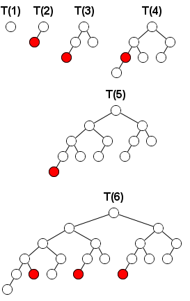

A Fibonacci tree is a binary tree recursively defined as:
On such a tree two players play a take-away game. On each turn a player selects a node and removes that node along with the subtree rooted at that node.
The player who is forced to take the root node of the entire tree loses.
Here are the winning moves of the first player on the first turn for T(k) from k=1 to k=6.

Let f(k) be the number of winning moves of the first player (i.e. the moves for which the second player has no winning strategy) on the first turn of the game when this game is played on T(k).For example, f(5) = 1 and f(10) = 17.
Find f(10000). Give the last 18 digits of your answer.